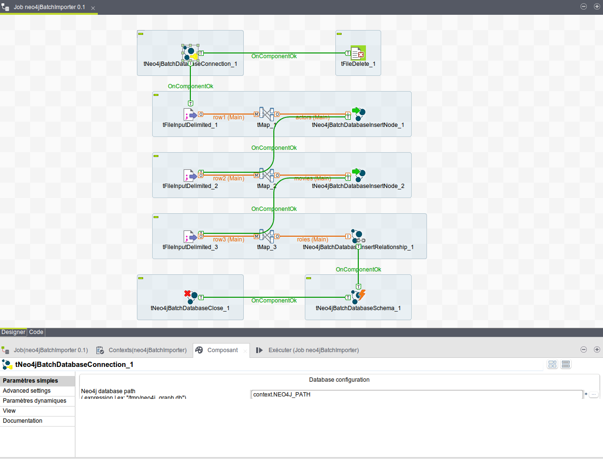
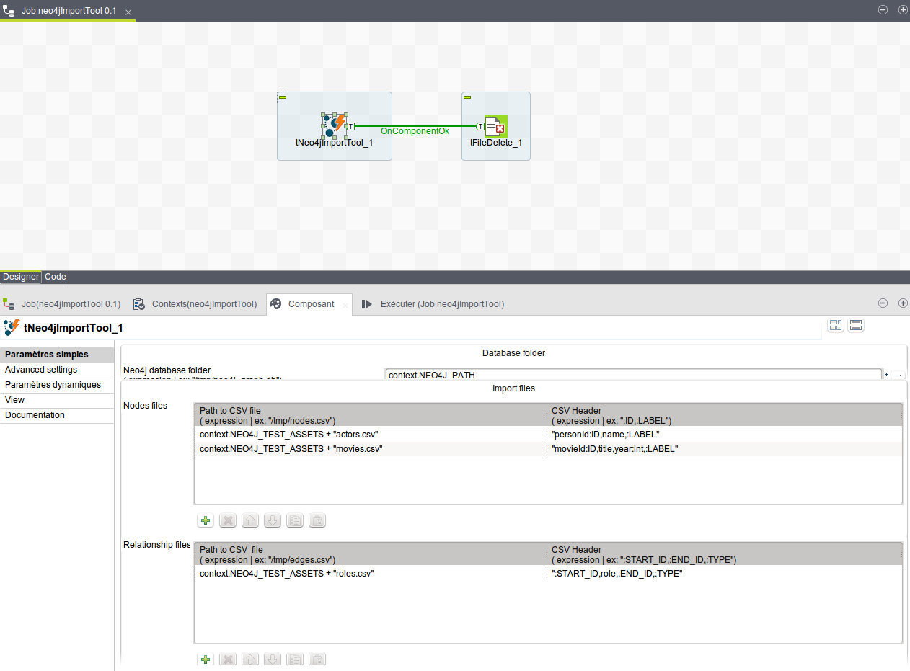

Examples
You can download a Talend example workspace here : download
This workspace come with threes examples. If you want to run those jobs, you have to change contexts variables on each jobs.
JDBC example
It demonstrate how to communicate with Neo4j throught Talend JDBC component.

Batch Import example

Import tool example
